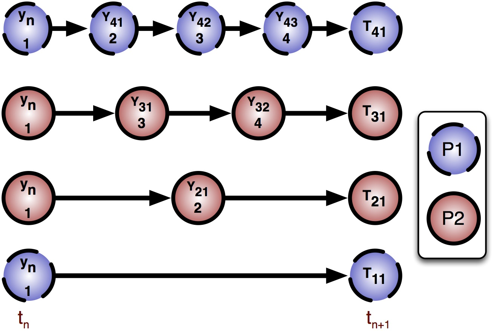

Parallel implementation of extrapolation methods
Extrapolation can be used to design numerical integration methods of arbitrary order of accuracy. High-order extrapolation can be performed in parallel on multicore computers, and a simple experimental implementation has been demonstrated to be competitive with state-of- the-art solvers. In this project, the student will write an efficient shared-memory parallel extrapolation solver. If time allows, we may also explore some of the following topics: order adaptivity, load balancing, a Python interface, and optimal strategies for step size selection in parallel. If a complete and efficient implementation is achieved, this work would be suitable for publication in a leading international journal.
Suggested background reading: